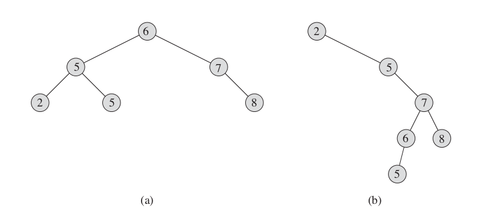
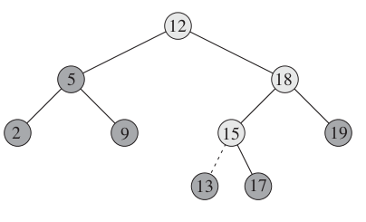
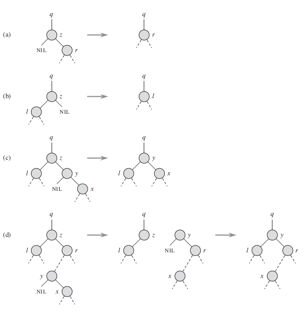

二叉搜索树
搜索树数据结构支持许多动态集合操作，因为，使用一颗搜索树既可以作为一个字典又可以作为一个优先队列。
二叉搜索树上的基本操作所花费的时间与这颗树的高度成正比。对于有 n 个结点的一棵完全二叉树来说，这些操作的最坏运行时间为Θ(lgn)。然而，如果这棵树是一条 n 个结点所组成的线性链，那么同样的操作花费Θ(n)的最坏运行时间。
什么是二叉搜索树
顾名思义，一颗二叉搜索树是以一颗二叉数来组织的。这样一棵树可以使用一个链表数据结构来表示，其中每个节点就是一个对象，除了 key 外，每一个结点还包含属性 left、right 和 p，分别指向结点的左孩子、右孩子和双亲。

图1 tree1
二叉搜索树中的关键字满足二叉搜索树性质：每一个结点的左孩子总是小于等于该结点，右孩子大于等于该节点。
2.动态集合操作
遍历：二叉搜索树性质允许我们通过一个简单的递归算法来按序输出二叉搜索树中的所有关键字，这种算法称为中序遍历（inorder tree walk）算法。这样命名的原因是输出的子树根的关键字位于其左子树的关键字和右子树的关键字值之间。
插入：tree_insert 从树根开始，指针 x 记录了一条向下的简单路径，并查找要替换的输入项 z 的 NIL。该过程保持遍历指针 y 作为 x 的双亲。while 循环使得这两个指针沿树向下移动，向左或向右移动取决于 z.key 和 x.key 的比较，直到 x 变为 NIL。这个 NIL 占据的位置就是输入项 z 要放置的地方。我们需要遍历指针 y，这是因为找到 NIL 时要知道 z 属于哪个节点。

图2 tree2
插入关键字 13 的过程。浅阴影结点指示了一条从树根到要插入位置的简单路径。
删除： 从一颗二叉搜索树 T 中删除一个结点 z 的整个策略分为三种基本情况，但只有一种情况有点棘手。
- 如果 z 没有孩子结点，那么只是简单的将其删除，并修改父节点，用 NIL 替换 z。
- 如果 z 只有一个孩子，那么将这个孩子提升到树中 z 的位置上，并修改 z 的父节点，用 z 的孩子替换 z。
- 如果 z 有两个孩子，那么找 z 的后继 y，并让 y 占据书中 z 的位置。z的原来右子树部分成为 y 的新的右子树，并且 z 的左子树成为 y 的新的左子。

图3 tree3
为了能在二叉搜索树内移动子树，定义一个子过程 transplant，它是用另一棵子树替换一棵子树并成为其双亲的孩子结点。
二叉搜索树的 C 语言简单实现：
#include <stdlib.h> #include <stdio.h> typedef struct node { int key; struct node *left; struct node *right; struct node *p; }NODE; void node_init(NODE *node) { node->left = NULL; node->right = NULL; node->p = NULL; node->key = 0; } void inorder_tree_walk(NODE *x) { if (x != NULL) { inorder_tree_walk(x->left); printf("%d ", x->key); inorder_tree_walk(x->right); } } NODE * tree_search(NODE *x, int k) { if (x == NULL || k == x->key) return(x); if (k < x->key) return(tree_search(x->left, k)); else return(tree_search(x->right, k)); } NODE * iterative_tree_search(NODE *x, int k) { /* * 对于大多数计算机，采用while循环 * 来展开递归，用一种迭代方式重新 * 这个过程，运行的效率要比递归高 * 的多。 */ while (x != NULL && k != x->key) { if (k < x->key) x = x->left; else x = x->right; } return(x); } NODE * tree_minimum(NODE *x) { /* * 二叉搜索树性质保证了tree_minimum是正确的 */ while (x->left != NULL) x = x->left; return(x); } NODE * tree_maximum(NODE *x) { /* * 与tree_minimum是对称的 */ while (x->right != NULL) x = x->right; return(x); } NODE * tree_successor(NODE *x) { /* * 查找一个节点的后继 * * case1: 如果结点x的右子树非空， * 那么x的后继恰是x右子树中的最左结点。 * * case2:如果结点x的右子树为空,并有一个后继y， * 那么y就是x的有左孩子的最底层祖先，并且它也是 * x的一个祖先 */ NODE *y; y = (NODE *)malloc(sizeof(NODE)); node_init(y); if (x->right != NULL) return tree_minimum(x->right); y = x->p; while (y != NULL && x == y->right) { x = y; y = y->p; } return(y); } NODE * tree_predecessor(NODE *x) { /* * 查找先驱，与tree_successor对称 */ NODE *y; y = (NODE *)malloc(sizeof(NODE)); node_init(y); if (x->left != NULL) return tree_minimum(x->left); y = x->p; while (y != NULL && x == y->left) { x = y; y = y->p; } return(y); } void tree_insert(NODE **root, int key) { NODE *x, *y, *z; y = NULL; z = (NODE *)malloc(sizeof(NODE)); node_init(z); z->key = key; x = *root; while (x != NULL) { y = x; if (z->key < x->key) x = x->left; else x = x->right; } z->p = y; if (y == NULL) *root = z; //tree T was empty else if (z->key < y->key) y->left = z; else y->right = z; } void transplant(NODE **root, NODE *u, NODE *v) { /* * 用一颗以v为根的子树来替换一颗以u为根的子树时， * 结点u的双亲就变成了结点v的双亲。 * 注意，transplant并没有处理v.left和v.right的更新， * 这些更新都是由transplant的调用者来负责。 */ if (u->p == NULL) *root = v; else if (u == u->p->left) u->p->left = v; else u->p->right =v; if (v != NULL) v->p = u->p; } void tree_delete(NODE **root, NODE *z) { /* * case1: 结点z没有左孩子 * case2: 结点z没有右孩子 * case3: 结点z有两个孩子 */ NODE *y; y = (NODE *)malloc(sizeof(NODE)); node_init(y); if (z->left == NULL) transplant(root, z, z->right); else if (z->right == NULL) transplant(root, z, z->left); else { y = tree_minimum(z->right); if (y->p != z) { transplant(root, y, y->right); y->right = z->right; y->right->p = y; } transplant(root, z, y); y->left = z->left; y->left->p = y; } } int main(void) { NODE *root; root = NULL; tree_insert(&root, 13); tree_insert(&root, 3); tree_insert(&root, 83); tree_insert(&root, 15); tree_insert(&root, 61); tree_insert(&root, 74); tree_insert(&root, 81); printf("after insert 7 elements:\n"); inorder_tree_walk(root); printf("\n"); tree_delete(&root, tree_search(root, 3)); tree_delete(&root, iterative_tree_search(root, 83)); printf("\nafter delete 3, 83:\n"); inorder_tree_walk(root); printf("\n"); printf("\nminimum: %d\n", tree_minimum(root)->key); printf("\nmaximum: %d\n", tree_maximum(root)->key); printf("\nsuccessor of 15: %d\n", tree_successor(iterative_tree_search(root, 15))->key); printf("\npredeccessor of 74: %d\n", tree_predecessor(iterative_tree_search(root, 74))->key); }
3.随机构建二叉搜索树
二叉搜索树上的每一个基本操作都能在О(h)时间内完成，h为树的高度。我们可以将输入序列随机化，可以实现随机构建一棵期望高度为О(lgn)的二叉搜索树。